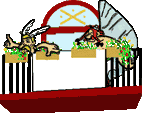
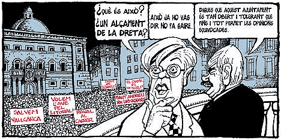

dimecres
29 de març 2006, 8 del vespre, plaça Orfila

On
és la participació ciutadana?
| |
Convocatòries sobre l'estat dels districtes, Audiències
Públiques, Iniciatives Populars, Consultes ciutadanes,
Fòrums i consells sectorials, Comissions de Seguiment,
Plenaris oberts a la participació ciutadana, Consells
Ciutadans, Normes de funcionament dels districtes...
fum i màrqueting polític al cap d'avall.
On està aquesta aquesta participació? On els ponts que se suposa
tendeix l'administració al ciutadà per a escoltar i atendre en
tant que sigui possible les seves reivindicacions? No parlem aquí
del tot s'hi val, parlem d'escoltar a les comunitats que demanen
diàleg i obrir vies de consens per a procurar solucions més justes
i col·lectives.
Avui 29 de març de 2006 un mínim d'onze plataformes ciutadanes
que el centralisme i les falses maneres de l'ajuntament de Barcelona
ha despreciat, perquè no combreguem amb les seves 'rodes
de molí de disseny cívic' i lluitem per a impedir nyaps
i potinades, sortim a l'hora als carrers per a manifestar el nostre
malestar amb aquestes pràctiques, tant semblants a les de l'administració
Nordamericana, que menteix per a justificar els seus arguments
agressius i presenta aliats que no són altre cosa que traïdors
botiflers ansiosos d'ensumar la flaire del 'poder'.
Al nostre poble, a Sant Andreu de Palomar, ens ensarronen, amb
l'ajut d'associacions
veïnals que no tenen empatx en trencar un moviment veïnal com
és el Grup Sant Andreu per Les Casernes, i als
nostres, pràcticament últims, terrenys públics es faran un fart
de construir-hi pisos privats. On és la veritable participació
ciutadana? Als despatxos entre constructors, polítics i 'líders'
venuts?
Avui, cada col·lectiu en les seves zones d'influència i amb els
seus respectius continguts, però amb un rerefons comú "L'administració
té l'obligació d'escoltar a la ciutadania i proporcionar solucions
de consens", volem denunciar els tripijocs, els enganys i
les ensarronades que polítics i aprofitats mantenen pel seu benefici
i en contra dels interesos de molts ciutadans, als que fan entendre
que la dissidència respecte qualsevol decisió municipal ha d'interpretar-se
sempre com sinònim de marginalitat i com a tal deu ser tractada.
|

|